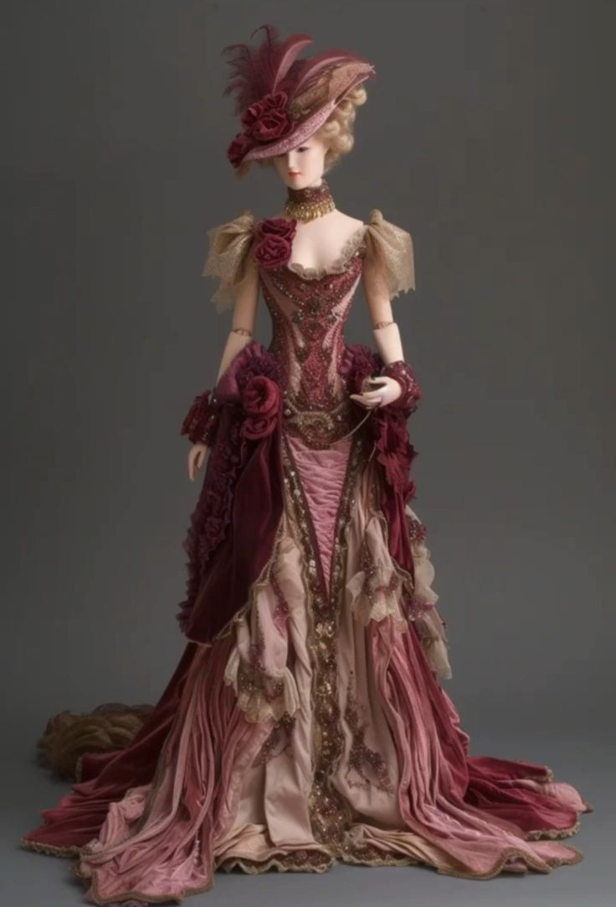

أزياء القرن التاسع عشر
تعتبر الأزياء الفكتورية مرآة للطبقة الاجتماعية والمكانة المرموقة في ذلك الوقت. تميزت ملابس النساء بالتنانير الواسعة المدعومة بـ "الكراينولين" والمشدات الضيقة (المشد الفكتوري)، بينما تميزت أزياء الرجال بالرقي والبساطة المنظمة مع القبعات الطويلة والسترات الرسمية المستقيمة.

الأزياء النسائية
الفساتين الفخمة المصنوعة من الحرير والدانتيل والمطرزة يدوياً بتفاصيل دقيقة تعكس الثراء والوقار.

الوقار الرجالي
السترات الداكنة، الساعات ذات السلاسل الذهبية، والقبعات الأسطوانية التي كانت رمزاً للرجل النبيل.
أسرار الكورسيه الفيكتوري: بين أسطورة الـ "الخصر النحيل" وحقائق التاريخ
لطالما ارتبطت صورة المرأة الفيكتورية بمشد الخصر (الكورسيه) الشديد الضيق. تشيع الأفلام أن النساء كن يغمى عليهن دائماً بسبب ضيقه، لكن الحقيقة التاريخية أكثر تعقيداً! الكورسيه لم يكن أداة تعذيب بالضرورة، بل كان دعامة أساسية للظهر ووسيلة لتوزيع وزن الفساتين الثقيلة التي كانت تزن كيلوغرامات. نعم، كانت هناك مبالغات في "التضييق الشديد" لدى الطبقات المخملية لإبراز النحافة، لكن بالنسبة للمرأة العاملة، كان الكورسيه قطعة ملابس يومية داعمة وعملية، تماماً كالملابس الرياضية اليوم.�.
كيف تدمج أزياء القرن الـ19 مع الخيال؟: Steampunkدليلك الشامل لأسلوب الـ
ماذا لو لم تتوقف الثورة الصناعية، واستمر العالم في الاعتماد على طاقة البخار حتى تصبح تكنولوجيا المستقبل؟ هذا هو جوهر أسلوب الـ "ستيم بانك" (Steampunk). في هذا النمط، تلتقي فساتين المشدات والسترات الفيكتورية الطويلة مع النظارات النحاسية (Goggles)، التروس، والساعات الميكانيكية الظاهرة. إنه مزيج ساحر يجمع بين فخامة الماضي وخيال المستقبل العلمي، ويعد اليوم واحداً من أبرز صيحات الأزياء البديلة التي تكتسح منصات التصميم عالمياً.�
حقائق مرعبة: لماذا كانت صبغات فساتين العصر الفيكتوري الأخضر قاتلة؟
في منتصف القرن التاسع عشر، اجتاحت هوس "الأخضر الزمردي" أزياء لندن. كان اللون مشعاً وساحراً تحت أضواء الشموع، ولكن خلف هذا الجمال كان يختبئ سر مميت: الزرنيخ! اكتشف الكيميائيون أن استخدام الزرنيخ هو الطريقة الوحيدة لتثبيت هذا اللون الأخضر الزاهي على الأقمشة. ونتيجة لذلك، بدأت السيدات اللواتي يرتدين هذه الفساتين يعانين من تقرحات جلدية مروعة وتسمم تدريجي، بل إن صانعات الفساتين أنفسهن كن يمُتن ببطء في الورش بسبب استنشاق غبار الصبغة القاتل.�